Explore, filter and export without writing SQL
This guide walks through every part of the FilterMate panel with screenshots taken in QGIS 4.2. Read it top to bottom the first time, then use the table of contents as a reference. Everything shown here works the same on QGIS 3.x (Qt5) and QGIS 4.x (Qt6).
1How FilterMate works
FilterMate applies a subset filter to your vector layers. Nothing is deleted or copied: the filtered layer simply shows only the features that match, exactly as if you had typed a provider filter in the layer properties. FilterMate builds that filter for you, in the native language of the data source (PostGIS SQL, SpatiaLite SQL or a QGIS expression for files).
Every spatial filter follows the same three-part pattern:
1. Source layer
The layer you pick a reference geometry from, using the Exploring zone: one feature, several features or an expression.
2. Spatial predicate
The relation to test: Intersect, Contain, Are within, Touch, and so on, optionally with a buffer distance.
3. Target layers
The layers that get filtered. Only their features that satisfy the predicate against the source geometry remain visible.
Attribute-only filters also work: with no target layers and no predicate, FilterMate filters the
source layer itself on the features you selected in the Exploring zone. Filters can be chained
with AND, OR and AND NOT, undone, redone, saved as favorites, and
exported to a new file or GeoPackage project.
2Installation
From the QGIS plugin repository (recommended)
- In QGIS, open Plugins → Manage and Install Plugins…
- Search for FilterMate in the All tab and click Install Plugin.
- A FilterMate button appears in the plugin toolbar. Click it to open the panel.
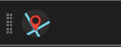
Manual installation
Download the ZIP from GitHub Releases, then either use Install from ZIP in the plugin manager or unzip it into your profile's plugin folder:
| OS | Plugin folder |
|---|---|
| Windows | %APPDATA%\QGIS\QGIS3\profiles\default\python\plugins\ |
| Linux | ~/.local/share/QGIS/QGIS3/profiles/default/python/plugins/ |
| macOS | ~/Library/Application Support/QGIS/QGIS3/profiles/default/python/plugins/ |
QGIS4 profile directory on some platforms.
Settings → User Profiles → Open Active Profile Folder always opens the right place.
Optional: PostgreSQL / PostGIS
FilterMate filters PostGIS layers server-side. This needs the psycopg2 Python package inside the QGIS Python environment:
pip install psycopg2-binaryOn Windows, run it from the OSGeo4W Shell that ships with QGIS. Without it, PostgreSQL layers still work through the generic OGR backend, only slower.
3The panel at a glance
FilterMate is a dock panel. By default it opens on the right side of the QGIS window and can be moved, floated or resized like any other QGIS panel.
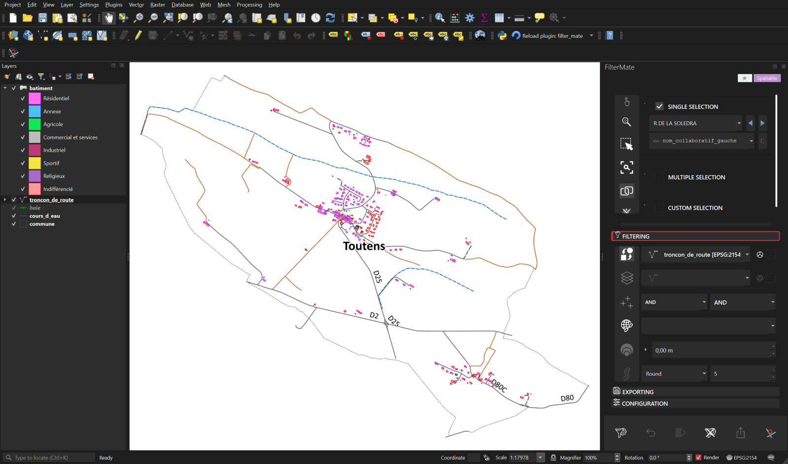
The panel is made of four areas, from top to bottom:
| Area | What it does |
|---|---|
| Header badges | The ★ n badge counts saved favorites and opens the favorites menu. The colored badge shows which backend handles the current layer: PostgreSQL Spatialite OGR Memory. |
| Exploring zone | Pick the reference features on the current layer: single, multiple or expression-based selection, plus a vertical rail of navigation buttons. |
| Tool tabs | Three collapsible tabs: Filtering, Exporting and Configuration. Only one is open at a time. |
| Action bar | The six buttons that actually do something: Filter, Undo, Redo, Unfilter, Export, About. |
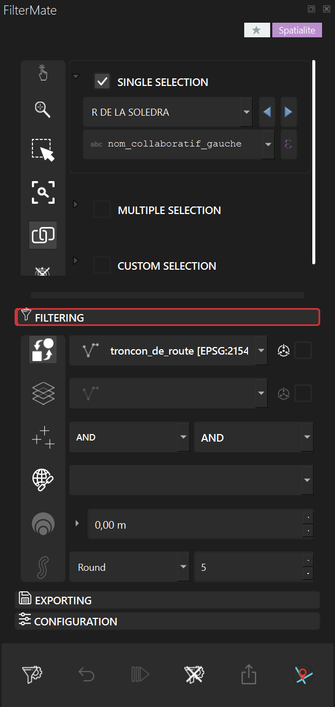
4Exploring a layer
The Exploring zone works on the current layer, shown in the first row of the Filtering tab. By default it follows the layer selected in the QGIS Layers panel (the auto current layer button, first in the Filtering rail). Turn that button off to pick the layer manually from the drop-down.
Three selection modes are available. Ticking one un-ticks the others, and the header of each box expands or collapses it.
Single selection
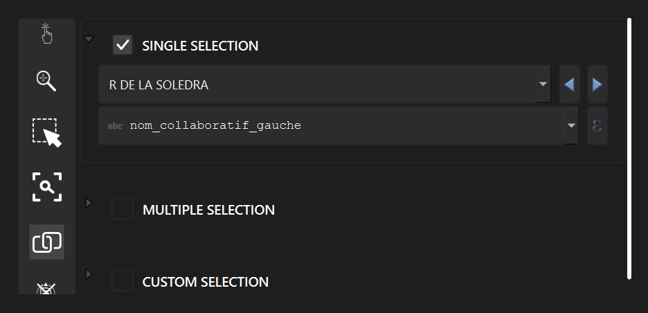
Pick one feature from a searchable drop-down. The second row is the display expression:
FilterMate detects a sensible name field automatically (name, label, id…) but you can type any QGIS expression,
for instance "code" || ' - ' || "name". The blue arrows step to the previous or next feature.
Multiple selection
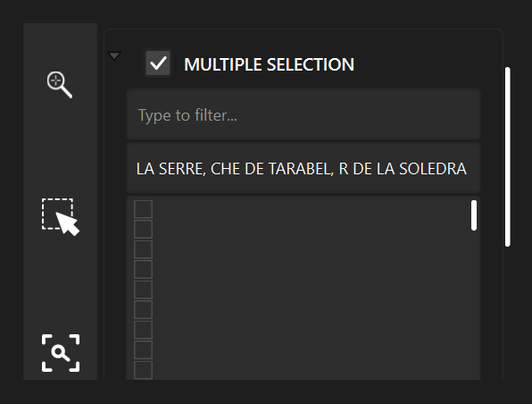
Tick as many features as you need. The list loads at most 1000 rows (configurable) so that huge layers never freeze QGIS. When the list is truncated, typing in the filter box searches the whole layer, and Select All in the right-click menu loads everything.
Custom selection (expression)
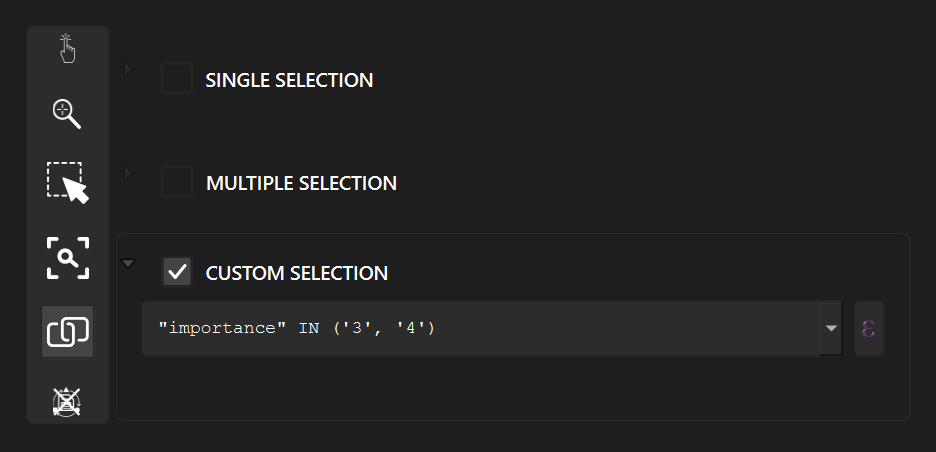
Write a QGIS expression; every feature it matches becomes part of the reference geometry. This is the mode to use for
"all features": an always-true expression such as 1 or TRUE takes the whole source layer.
The exploring rail
The vertical buttons to the left of the selection boxes, from top to bottom:
| Button | Effect |
|---|---|
| Identify | Identifies the selected feature on the map (same as the QGIS identify tool). |
| Zoom | Zooms the map canvas to the selected feature(s). |
| Selecting (toggle) | Mirrors your FilterMate selection as a QGIS selection on the map, and the other way round: selecting on the canvas updates the Exploring boxes. |
| Tracking (toggle) | Auto-zooms every time the selected feature changes. |
| Linking (toggle) | Keeps the three selection boxes in sync: switching mode carries the current features over. |
| Reset | Clears every exploring property stored for the layer (display expression, selection, mode). |
Each layer remembers its own exploring settings in the project, so switching layers and coming back restores your selection.
5The Filtering tab
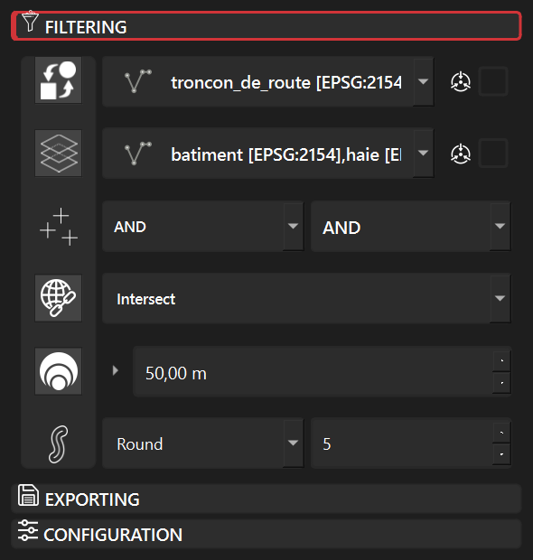
Each row of the Filtering tab is switched on and off by the button in the rail on its left. A row that is switched off is ignored when you press Filter, which lets you keep a buffer or a predicate configured without using it.
Row by row
| Rail button | Row | Meaning |
|---|---|---|
| Auto current layer | Source layer | When on, the source layer follows the QGIS Layers panel. When off, choose it in the drop-down. The small icon and checkbox to the right enable the centroid option for the source geometry. |
| Layers to filter | Target layers | A checkable list of every other vector layer in the project. Right-click for Select All, Deselect All or by geometry type. The checkbox on the right uses centroids for distant (target) layers. |
| Combine operator | Two drop-downs | How a new filter combines with the one already applied. Left: for the source layer. Right: for the target layers. Values are AND, OR and AND NOT. |
| Geometric predicates | Predicate list | Checkable list of spatial relations. Several can be ticked; they are combined with OR. |
| Buffer value | Distance in metres | Expands (positive) or shrinks (negative) the source geometry before the predicate is tested. Click the small arrow to switch to a QGIS expression, e.g. "width" * 2. |
| Buffer type | Style and segments | End-cap style (Round, Flat, Square) and the number of segments per quarter circle (default 5). Fewer segments are faster on very complex geometries. |
The eight predicates
| Predicate | Keeps a target feature when… | Typical use |
|---|---|---|
| Intersect | it shares at least one point with the source geometry. | Everything touching a zone. The default and by far the most common. |
| Contain | it completely contains the source geometry. | Which parcel contains this point? |
| Are within | it lies entirely inside the source geometry. | Buildings fully inside a commune. |
| Touch | it touches the boundary without overlapping the interior. | Neighbouring parcels. |
| Overlap | it partly overlaps the source (same dimension, neither contains the other). | Zones straddling a boundary. |
| Cross | it crosses the source (a line through a polygon, two crossing lines). | Roads crossing a river. |
| Equal | its geometry is identical to the source. | Finding duplicates between layers. |
| Disjoint | it has no point in common with the source. | Everything outside a zone. Combine with a buffer for exclusion rings. |
Buffers
- Positive buffer, e.g. 50 m: "everything within 50 m of the selected road". Use Intersect as the predicate.
- Negative buffer, e.g. -20 m on a polygon: keeps only the features well inside it, away from the edges.
- Expression buffer: the distance is evaluated per source feature, so a regulatory distance can come from an attribute.
- Distances are always in metres. Layers in a geographic CRS (degrees) are reprojected on the fly.
Centroids
The two centroid checkboxes replace polygons by a representative point (a point guaranteed to be on the surface) during the test. With very detailed polygons this can make a cascade several times faster, at the cost of exactness on the borders. FilterMate keeps the spatial index usable in both cases.
6Tutorial: your first spatial filter
Goal: show only the buildings and hedges within 50 m of one road. The screenshots use a small BD TOPO extract (one commune, 373 buildings, 130 road sections) stored in a GeoPackage, but any project with a line layer and a polygon layer will do.
Each step below shows the whole QGIS window, so you can check the map canvas and the panel against your own screen. The map extent is the same from step 2 to step 6.
-
Choose the source layer. Load your layers and open FilterMate. In the Layers panel, click the road layer: it becomes the source layer (the auto current layer button is on by default) and the Exploring zone switches to it.
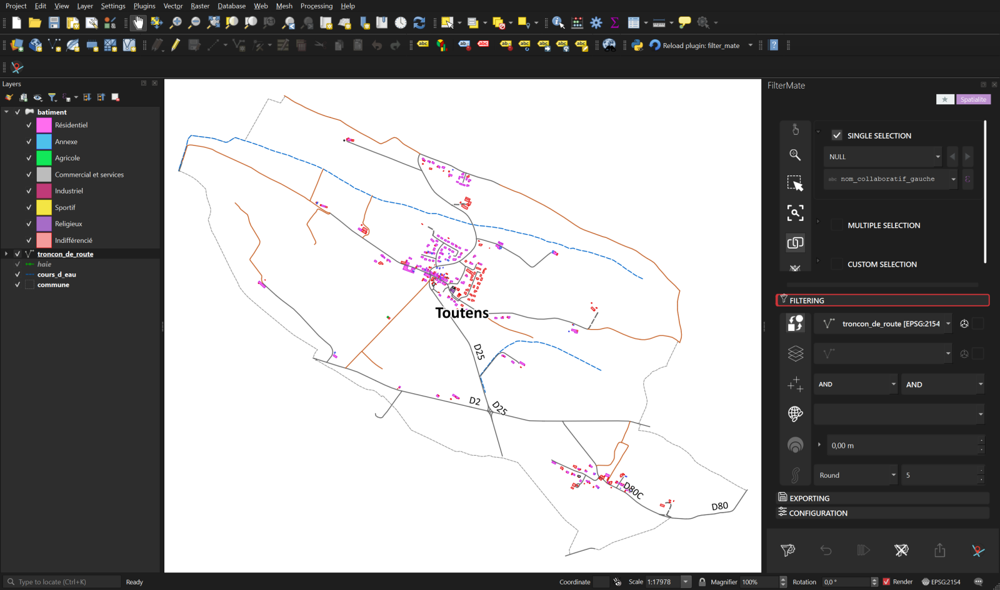
Step 1. The road layer is the current layer: its name appears in the first row of the Filtering tab. No feature is picked yet. -
Pick the reference road. In the Exploring zone, tick Single selection and choose a road in the drop-down. The canvas selects it (yellow). If the drop-down shows identifiers rather than names, change the display field in the row below.
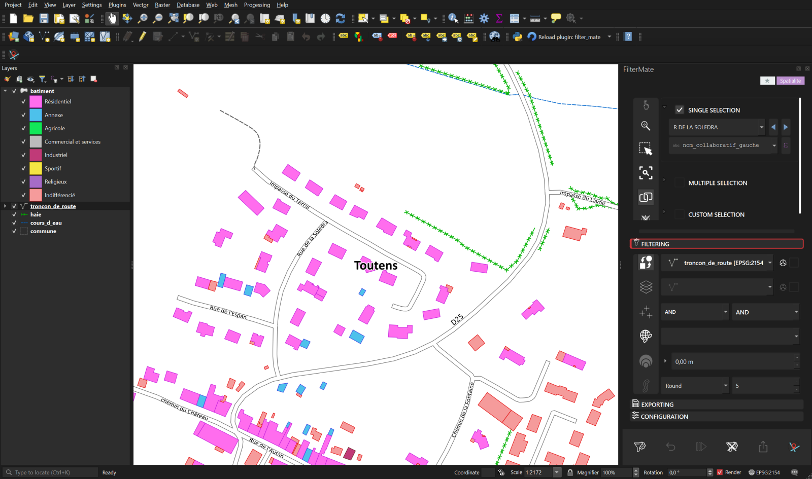
Step 2. The selected road is highlighted on the canvas; all buildings and hedges are still visible. -
Choose the target layers. Open the Filtering tab. Switch on Layers to filter (second rail button) and tick batiment and haie in the list.
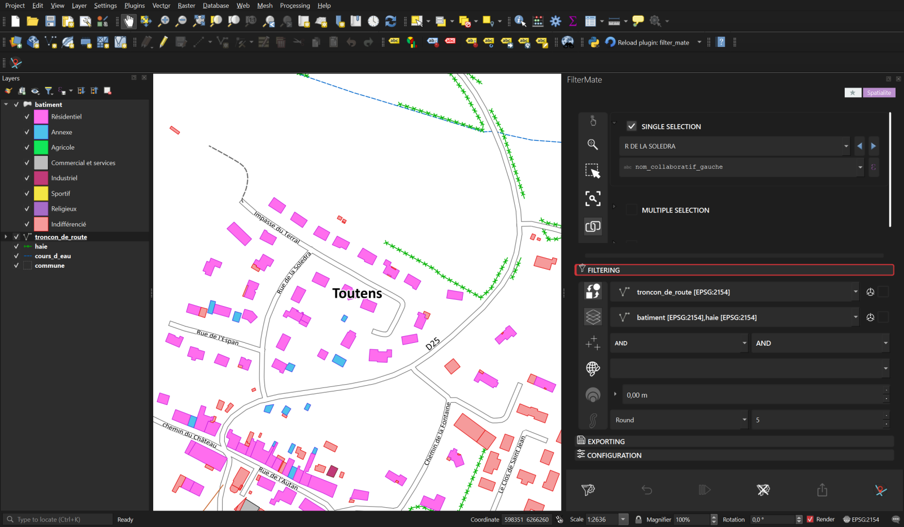
Step 3. The second row of the Filtering tab now reads the two target layers. -
Choose the predicate. Switch on Geometric predicates and make sure Intersect is ticked.
Step 4. Intersect is the predicate: a building is kept when it touches the (buffered) road. -
Add a buffer. Switch on Buffer value and type
50. The buffer type row (Round, 5 segments) can stay as it is.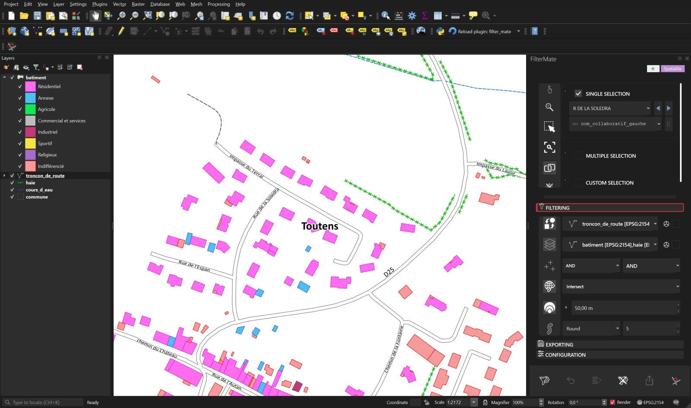
Step 5. Everything is configured: source road, two targets, Intersect, 50 m buffer. Nothing has changed on the map yet. -
Run the filter. Press the Filter button (first button of the action bar). The map canvas is frozen for the duration of the task and redrawn once at the end.
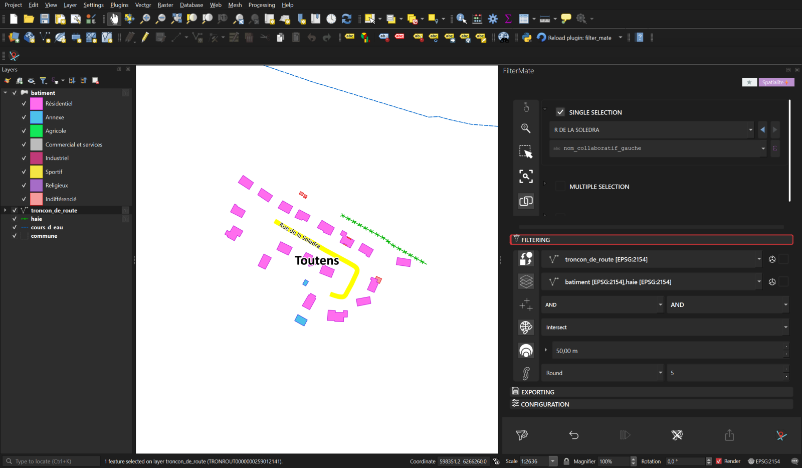
Step 6. Same extent as step 5: only the buildings (pink) and hedges (green) within 50 m of the road remain. Undo is now enabled in the action bar.
What FilterMate generated for the GeoPackage buildings layer, as you can read it in Layer Properties → Source → Provider Feature Filter:
ROWID IN (SELECT id FROM "rtree_batiment_geom"
WHERE minx <= 598540.4 AND maxx >= 598349.4
AND miny <= 6265342.3 AND maxy >= 6265157.7)
AND ST_Intersects("geom",
ST_Buffer(ST_MakeValid(ST_GeomFromText('LineString (…)', 2154)), 50.0))The first clause queries the GeoPackage R-tree so that SQLite only evaluates the expensive predicate on candidate rows. That is what turns a 6-minute cascade on a 37-layer project into a 3-second one.
AND the new condition narrows the previous result; with OR it widens it; AND NOT removes features.
The layer properties show the full combined expression.
7Action bar, undo and history
| Button | Action |
|---|---|
| Filter | Builds and applies the filter described by the Exploring zone and the Filtering tab. |
| Undo | Restores the previous filter state of the affected layers. The history is per project and survives a restart of QGIS. |
| Redo | Re-applies a filter you just undid. |
| Unfilter | Removes FilterMate's filter from the source layer and its targets, leaving other layers alone. Unlike Undo, it does not step back through history. |
| Export | Runs the export configured in the Exporting tab. |
| About | Opens the FilterMate website in your browser. |
Buttons are greyed out when they cannot apply: Undo before any filter, Redo when nothing was undone, Export while the Exporting tab is not configured.
8Favorites
A favorite stores a complete filter: source layer, selection, predicates, buffer and target layers. Re-applying it takes one click, which makes favorites the natural way to keep regulatory or recurring queries.
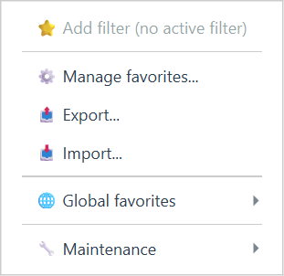
The favorites menu
- Add filter saves the filter currently applied. It is disabled when no filter is active.
- Saved favorites are listed in the Quick filtering section at the top: one click applies them.
- Manage favorites… opens the manager described below.
- Export… / Import… exchange favorites as JSON files between projects or colleagues.
- Global favorites lists the favorites shared across all your projects.
- Maintenance holds database statistics and cleanup tools.
The favorites manager
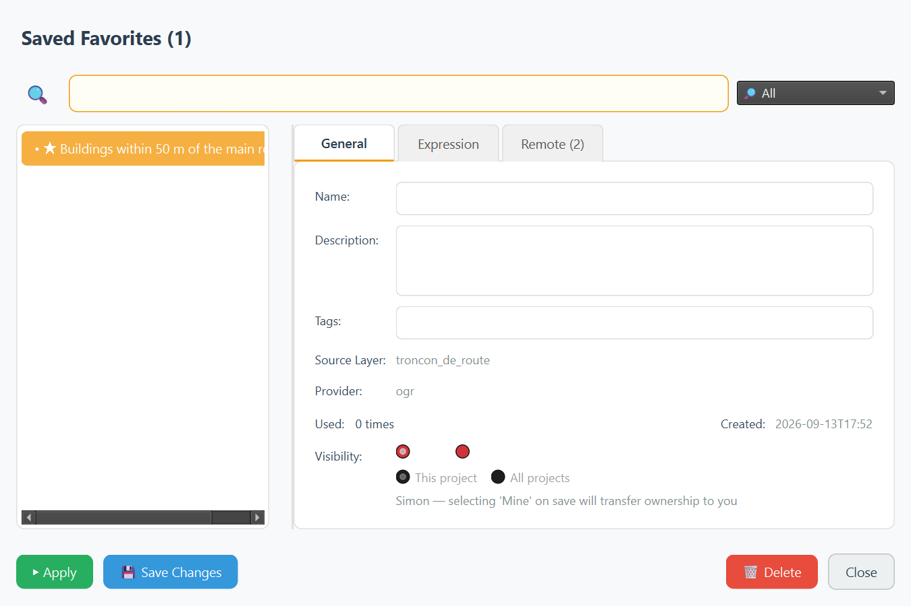
- General: rename the favorite, add a description and tags, see its source layer, provider and usage count. Visibility switches between This project and All projects (global).
- Expression: the exact filter expression, editable for advanced users.
- Remote: publishing to a shared git repository. FilterMate uses the QGIS authentication manager for credentials, so a team can maintain a common library of filters. This requires the optional QGIS Resource Sharing plugin.
Apply runs the favorite on the current project, Save Changes stores your edits, Delete removes it. Favorites are stored in FilterMate's own SQLite database in your QGIS profile and, for project-scoped ones, in the project file too.
9Exporting
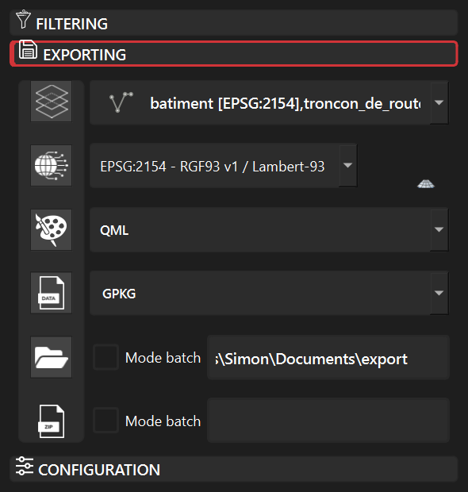
The Exporting tab writes the currently visible features of the chosen layers to disk, filters included. As in the Filtering tab, each row is enabled by its rail button.
| Row | Meaning |
|---|---|
| Layers | Checkable list of the layers to export. |
| Projection | Output CRS. Layers in another CRS are reprojected during the export. |
| Styles | Save the layer styles alongside the data as QML (QGIS native) or SLD (interoperable). With GeoPackage output the style is embedded in the file. |
| Output format | Any vector format QGIS can write: GeoPackage (default), Shapefile, GeoJSON, KML, CSV, FlatGeobuf… |
| Output folder | Where files are written. Batch mode writes one file per layer instead of one multi-layer file. |
| ZIP | Packs the result in a single archive, optionally in batch mode as well. |
GeoPackage projects
When the output format is GeoPackage and several layers are exported together, FilterMate embeds a QGIS project in the file with
the layer group hierarchy, styles and CRS preserved. Before writing, a recap dialog lists what will be exported and lets you keep or flatten the group structure.
Opening the resulting .gpkg in QGIS restores the whole map.
10Configuration
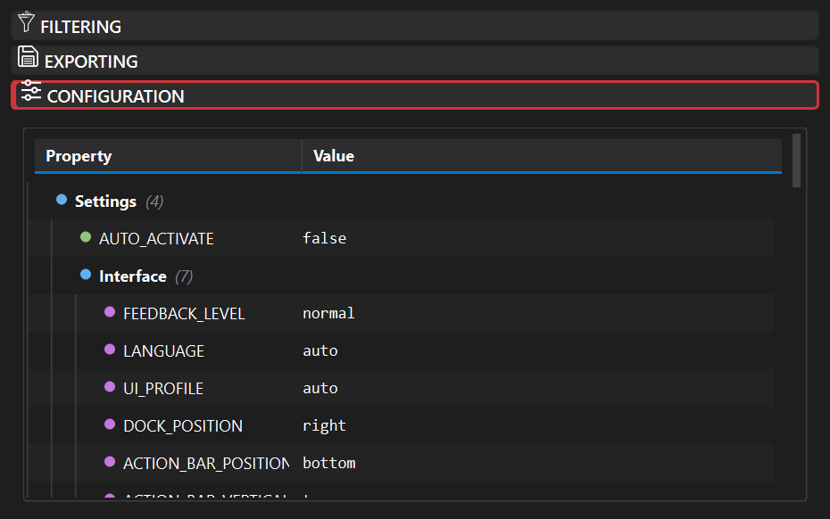
The Configuration tab exposes FilterMate's settings as a tree. Double-click a value to edit it; drop-down values offer their allowed choices. Most changes apply live, a few (dock position, UI profile) need the panel to be closed and reopened.
| Setting | Values | Notes |
|---|---|---|
AUTO_ACTIVATE | true / false | Open the panel automatically when a project with vector layers loads. |
FEEDBACK_LEVEL | minimal / normal / verbose | How many messages appear in the QGIS message bar. verbose is useful when reporting a problem. |
LANGUAGE | auto or one of 34 locales | auto follows the QGIS locale. The interface retranslates without restart. |
UI_PROFILE | auto / compact / normal / hidpi | Widget sizes. auto picks from screen size and scaling; force hidpi on 4K displays if controls look small. |
DOCK_POSITION | left / right / top / bottom | Where the panel docks when opened. |
ACTION_BAR_POSITION | top / bottom / left / right | Position of the six action buttons. |
ACTIVE_THEME | auto / default / dark / light | auto follows the QGIS theme. |
feature_picker_limit | number, default 1000 | Maximum rows loaded in the multiple-selection list. |
The tree also holds performance thresholds (when to switch optimisations on), the expression cache size, export defaults and the
Extensions section (favorites sharing, QFieldCloud). The complete file lives at config/config.json in the plugin folder;
config/config.default.json next to it documents every key and can be copied back to reset everything.
11Backends and performance
FilterMate picks a backend per layer, based on its data provider, and shows it in the header badge. The backend decides where the spatial test runs: in the database whenever possible, in QGIS otherwise.
| Badge | Used for | How it filters |
|---|---|---|
| PostgreSQL | PostGIS layers, with psycopg2 installed | Native SQL with ST_* functions, an index-friendly && bounding-box test, primary-key detection, and temporary materialized views (fm_temp_mv_*) for very large cascades. |
| Spatialite | GeoPackage and SpatiaLite files | SpatiaLite SQL. On GeoPackage the R-tree candidate clause is added first so the predicate only runs on candidates. |
| OGR | Shapefile, GeoJSON, KML and every other file format | QGIS expressions evaluated with the GEOS engine, with geometry simplification and a cascaded union of the source features. |
| Memory | Scratch and temporary layers | In-memory evaluation. |
Measured on real projects with version 4.8.9 (timings from filtermate.log):
| Scenario | Before | Now |
|---|---|---|
| 37 GeoPackage layers filtered by one commune (Toulouse) | 371 s | 1.6 to 3 s |
| 17 PostGIS layers, five communes, centroid option | 49.6 s | under 4 s |
| First connection to a local PostgreSQL server | 21 s stall | immediate |
- The map canvas is frozen during a filter task and redrawn once, so the interface stays responsive.
- Click the backend badge to see the backends available for the current layer and force one when the automatic choice is not what you want.
- Every step above a few milliseconds is logged with a
⏱prefix; compare two runs by grepping the log.
12Processing Toolbox
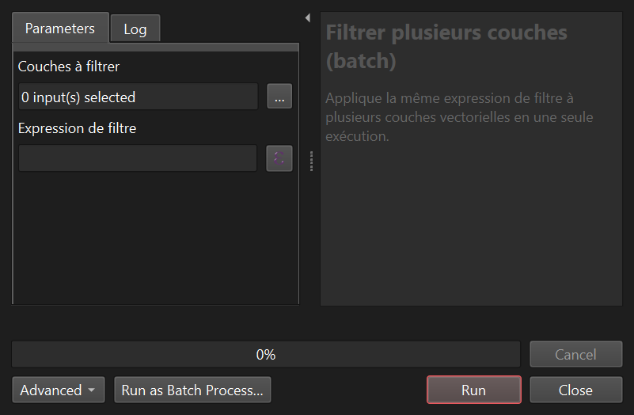
FilterMate registers a Processing provider. Its first algorithm, filtermate:batch_filter, applies one filter expression to several vector layers in a single run.
Because it is a regular Processing algorithm it can be used in the graphical modeler, in batch mode, or from Python:
import processing
processing.run("filtermate:batch_filter", {
"INPUT_LAYERS": ["batiment", "haie"],
"EXPRESSION": "\"etat_de_l_objet\" = 'En service'",
})13Troubleshooting
Where to look first
- QGIS Log Messages panel, FilterMate tab: warnings and errors of the current session.
logs/filtermate.login the plugin folder: the full log, including⏱timing lines. Set the environment variableFILTERMATE_LOG_LEVEL=DEBUGbefore starting QGIS for a verbose log.- Switch
FEEDBACK_LEVELto verbose in the Configuration tab to see every message in the message bar.
Common questions
| Symptom | Cause and fix |
|---|---|
| The filter returns no feature | Check that the predicate matches the geometry types (a line never contains a polygon), that the buffer sign is what you meant, and that no stray QGIS selection is left on the source layer when using an all-features expression. |
| "No target layer" or nothing happens | The Layers to filter row is switched off or empty. Attribute-only filters need at least a selection in the Exploring zone. |
| A layer cannot be filtered | It is in edit mode: answer the dialog, or toggle editing off in QGIS. |
| The badge says OGR on a PostGIS layer | psycopg2 is missing from the QGIS Python. Install it and restart QGIS. |
| Controls look tiny on a 4K screen | Set UI_PROFILE to hidpi. |
| The panel opens in the wrong language | Set LANGUAGE explicitly instead of auto. |
| A filter from an old session is still applied | Filters live in the project file. Use Unfilter, or clear the provider filter in the layer properties. |
Getting help
- Report bugs with the log excerpt on GitHub Issues.
- Ask questions on the Discord server.
- Watch the video tutorials.